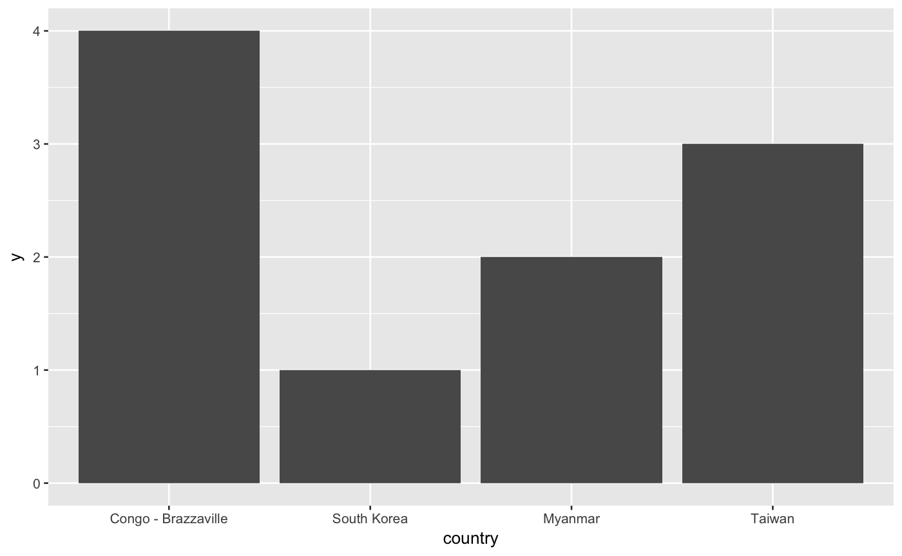

country_format is a constructor function that returns a function
to format country codes as country names suitable for passing to ggplot2's
scale functions' label parameters.
country_format(from = "iso2c", to = "en", short = TRUE, variant = FALSE, factor)
| from | Code format from which to convert. Defaults to |
|---|---|
| to | Language code of country names desired. Defaults to |
| short | Whether to use short alternative name when available. Can be
length 1 or the same length as |
| variant | Whether to use variant alternative name when available. Can
be length 1 or the same length as |
| factor | If |
A function that accepts a vector of country codes and returns them as country names.
A frequent reason to convert country codes back to country names is to make
data visualizations more readable. While both a code and name could be
stored in a data frame, the computation and extra storage required can be
avoided by transforming codes to names directly within the visualization via
a formatter function. as_country_name() could be used without
parentheses to format ISO 2-character codes as English names, but
format_country allows greater flexibility, returning a formatter
function with the specified parameters set.
For controlling the order of a discrete scale, pass the results of
order_countries() to limits.
if (require(ggplot2, quietly = TRUE)) { ggplot(data.frame(country = c("KOR", "MMR", "TWN", "COG"), y = 1:4), aes(x = country, y = y)) + geom_col() + scale_x_discrete(labels = country_format(from = "iso3c")) }